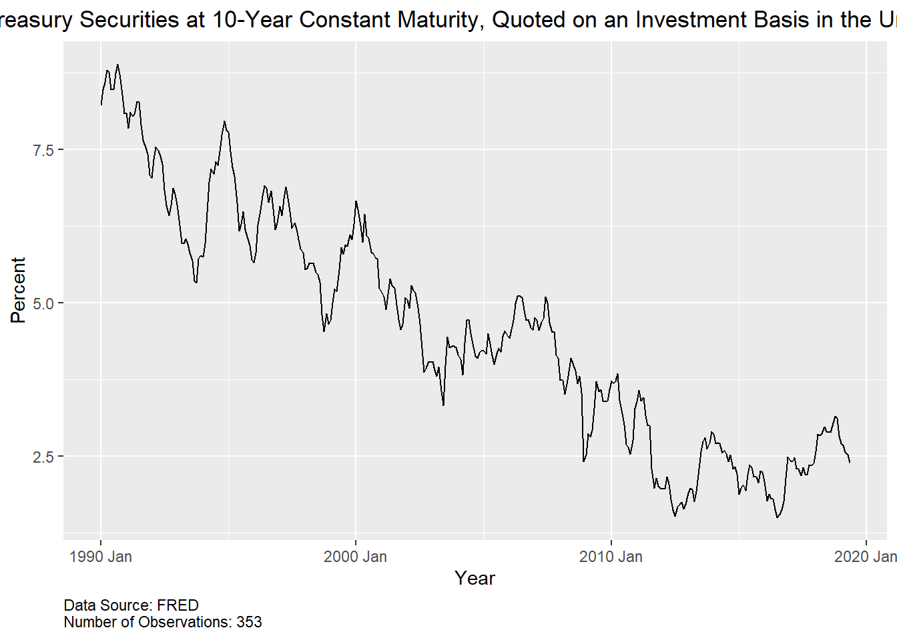
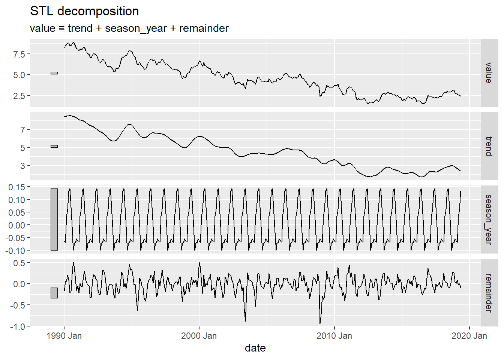
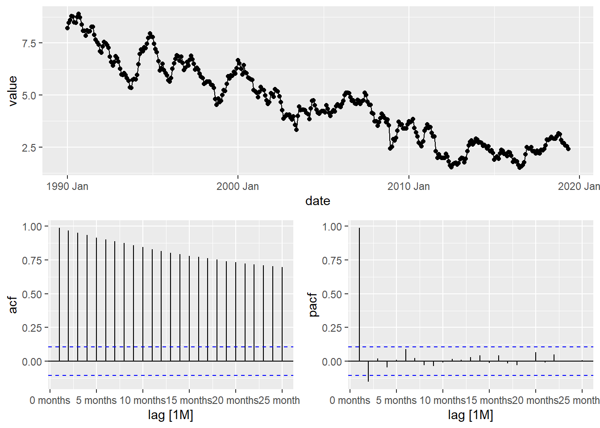
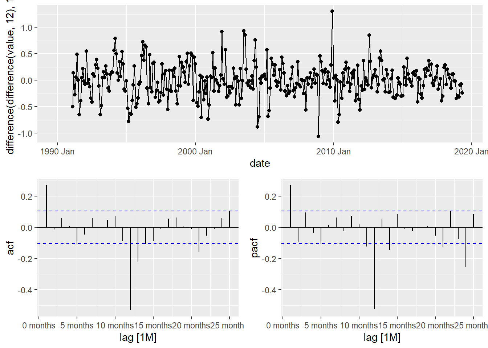

#fredr_set_key("8ac14705730213108bd4455884c14b02")
#er= fredr(
# series_id= "GS10", observation_start= as.Date("1990-01-01")
#)
er_tsibble <- er %>%
select(date, value) %>%
mutate(date = yearmonth(date)) %>%
as_tsibble(index = date)Midterm
Market Yield on U.S. Treasury Securities at 10-Year Constant Maturity, Quoted on an Investment Basis (GS10)
Required Libraries
This analysis was done in R using the following packages: fredr (to download the DJIA data from FRED), fpp3,, tidyr, lubridate (for time series handling, modeling, and plotting), and zoo (to fill missing values before the STL decomposition)
Data and Series Description
Variable Definition and Units
GS10 is the yield on a 10-year U.S. Treasury security, quoted on an investment basis. The monthly values are averages of business days. The units are percent, and the series is not seasonally adjusted. The source is the Board of Governors of the Federal Reserve System, published in the H.15 Selected Interest Rates release.
Data Source
Board of Governors of the Federal Reserve System (US), Market Yield on U.S. Treasury Securities at 10-Year Constant Maturity, Quoted on an Investment Basis [GS10], retrieved from FRED, Federal Reserve Bank of St. Louis: <https://fred.stlouisfed.org/series/GS10>
The underlying release is the Federal Reserve’s H.15 report: <https://www.federalreserve.gov/releases/h15/>
Why This Series Is a Meaningful Forecasting Problem
I chose this series because it behaves very differently from the U-6 series I used earlier. The 10-year yield has no stable mean over its history. It climbs through the 1960s and 1970s, peaks in the early 1980s, falls for roughly four decades to near zero in 2020, and then rises sharply again. The level is therefore dominated by long persistent swings and structural shifts rather than a fixed seasonal pattern, so I expect it to require differencing and to behave much like a random walk. That makes it a good test of whether a statistical model can beat a naive benchmark at all, since yields respond to news about inflation, growth, and Federal Reserve policy that is hard to anticipate from past values alone. The series also matters in practice, because the 10-year yield feeds into mortgage rates, corporate borrowing costs, and asset pricing, so even small forecast errors carry real consequences. Because I do not expect meaningful seasonality, the seasonal terms that mattered for U-6 should drop out, which will show how the best model changes with the structure of the data.
Train and Test sets
I split the data at May 2019. The training set runs from January 1990 to May 2019 (353 monthly observations), and the test set runs from June 2019 to September 2026 (88 observations). The test period includes the drop to near zero in 2020 and the sharp rise afterward, which the models never see during training, so it is a tough check on whether any model can beat a naive forecast. I split by date instead of at random to keep the time order intact.
train_data <- er_tsibble |> filter_index(. ~ "2019 May")
test_data <- er_tsibble |> filter_index("2019 Jun" ~ .)
cat("Training period:", format(min(train_data$date)), "to", format(max(train_data$date)), "\n")Training period: 1990 Jan to 2019 May cat("Test period:", format(min(test_data$date)), "to", format(max(test_data$date)), "\n")Test period: 2019 Jun to 2026 Sep cat("Training observations:", nrow(train_data), "\n")Training observations: 353 cat("Test observations:", nrow(test_data), "\n")Test observations: 88 Diagnosing the train series
Time plot
The time plot shows a clear downward trend in the 10-year yield over the training period. The series starts near 8 percent in early 1990 and ends close to 2.5 percent by mid-2019, so the level falls by roughly two-thirds over three decades. The decline is not smooth. There are repeated swings of a year or two, such as the rise to about 8 percent in late 1994, a rebound to near 6.5 percent around 2000, and a brief climb to about 5 percent in 2006 and 2007. Each peak is lower than the one before it. The steepest drop comes during the 2008 financial crisis, when the yield falls from around 4 percent to under 2.5 percent. After that the series stays low, bottoming near 1.5 percent in 2012 and again in 2016, with only a modest recovery to about 3 percent in 2018.
The series has no stable mean, since the level keeps drifting rather than returning to a fixed value. I do not see a regular seasonal pattern either, because the ups and downs vary in length and size from year to year. Together these features point to a non-stationary series that will need differencing before modeling, and the long persistent swings are what I would expect from something close to a random walk.
train_data |>
autoplot(value) +
labs(title = "Market Yield on U.S. Treasury Securities at 10-Year Constant Maturity, Quoted on an Investment Basis in the United States from 1990-2019",
x= "Year",
y= "Percent",
caption = "Data Source: FRED
Number of Observations: 353") +
theme(
plot.title = element_text(hjust = 0.5),
plot.caption = element_text(hjust = 0)
)
Time series decomposition
This decomposition covers the training data only, from January 1990 to May 2019. The trend again carries nearly all of the movement. It falls from about 8.5 percent in 1990 to roughly 2.5 percent by 2019, with temporary rebounds in the mid-1990s, around 2000, and in the mid-2000s. After the financial crisis it flattens out between about 1.5 and 3 percent, which matches the low-rate years in the time plot.
The seasonal component is negligible. It stays between about -0.1 and 0.15 percentage points, while the trend spans more than 6 points. The gray bar on the seasonal panel is much larger than the one on the trend panel, so that panel is zoomed in heavily and the real effect is small. The shape also repeats identically every year, which is how STL treats seasonality by default, so I would not read much economic meaning into it.
The remainder is centered on zero and usually stays within about 0.5 points. The largest negative spikes show up around 2003 and in late 2008, which line up with the post-dot-com period and the financial crisis. Because those episodes leave visible structure in the remainder, the trend and seasonal terms do not fully capture them.
library(zoo)
dcmp <- train_data %>%
model(STL(value~ trend(window = 13) + season(window = "periodic"),
robust = TRUE)) %>%
components()
autoplot(dcmp)
ACF & PACF plot
The ACF of the training data shows the same pattern as before. The autocorrelations start near 1 at lag 1 and decay slowly, still around 0.7 at lag 25 and far above the significance bounds at every lag. This slow, almost linear decline is the signature of a stochastic trend, and it matches the time plot, where the yield drifts down from about 8 percent in 1990 to roughly 2.5 percent in 2019 without returning to a fixed mean. The series is clearly non-stationary.
The PACF has one dominant spike at lag 1, close to 1, and a small negative spike at lag 2 that only just crosses the bounds. Beyond that the partial autocorrelations stay inside the bounds. A single near-unit spike at lag 1 is what a random walk looks like, because once last month’s value is accounted for, older values add very little. Neither plot shows spikes at lags 12 or 24, which agrees with the STL results showing negligible seasonality.
Together these plots show that the series needs first differencing before fitting an ARIMA model. After differencing, I would expect only a small amount of structure to remain, so the best model should have a low order, perhaps a small autoregressive or moving average term, and no seasonal component. This also explains why the naive forecast will be a tough benchmark to beat.
train_data %>%
gg_tsdisplay(value, plot_type = "partial")
Stationarity
The differenced series looks stationary. It fluctuates around zero with no visible trend, and the spread is fairly stable, mostly between -0.5 and 0.5 points. The largest outliers are a drop of about 1 point around late 2008 and a jump of about 1.3 points around 2010, which line up with the financial crisis. Variance also looks a little smaller after 2012, when yields were low and stable.
The ACF and PACF, however, show a problem. The ACF has a modest positive spike at lag 1 (about 0.27) and a very large negative spike at lag 12 (about -0.53), with a smaller negative spike at lag 13. The PACF shows a spike at lag 1, a large negative spike at lag 12 (about -0.5), and another at lag 24 that is smaller but still significant. A strong negative autocorrelation near -0.5 at the seasonal lag, with the PACF decaying across seasonal multiples, is the classic sign of over-differencing. In other words, the seasonal difference added structure to the data instead of removing it. This agrees with the STL decomposition and the original ACF, which both showed almost no seasonality, so there was little seasonal pattern for the seasonal difference to remove.
The lag 1 spike shows that some short-term dependence remains after differencing, which suggests a small nonseasonal AR or MA term. I would drop the seasonal difference and rely on a single first difference, then recheck the ACF and PACF. I would expect a cleaner plot with a small spike at lag 1 and nothing at lag 12. This also fits the plan to compare candidate ARIMA models with no seasonal terms against the naive benchmark. If you keep the seasonal difference in your report, I would explain that you tried it and rejected it because of the lag 12 pattern.
train_data |> gg_tsdisplay(difference(difference(value, 12), 1), plot_type="partial")Warning: Removed 13 rows containing missing values or values outside the scale range
(`geom_line()`).Warning: Removed 13 rows containing missing values or values outside the scale range
(`geom_point()`).
Establishing the benchmarks
Seasonal Naive
The seasonal naive model forecasts each month using the value from the same month one year earlier. It has no parameters to estimate, so the only thing the fit reports is the residual variance, sigma^2 = 0.7804, which gives a residual standard deviation of about 0.88 percentage points. That is large for a series that mostly moves a few tenths of a point from one month to the next. A typical one-step miss of nearly a full percentage point means this model gives up a lot of accuracy by comparing each month with the same month a year ago instead of the month just before it.
train_benchmark <- train_data |>
model(
benchmark_snaive = SNAIVE(value)
)
report(train_benchmark)Series: value
Model: SNAIVE
sigma^2: 0.6718 Fitting the ETS model
The automatic selection chose an ETS(A,Ad,N) model, which has additive errors, an additive damped trend, and no seasonal component. Dropping the seasonal term agrees with the STL decomposition and the ACF, which both showed almost no seasonality. The smoothing parameters tell a clear story. Alpha is essentially 1 (0.9999), so the level is reset to the latest observation each month, which is exactly how a random walk behaves. Beta is 0.146, so the slope adjusts slowly, and phi is 0.80, which damps the trend so that any momentum fades within a few months instead of continuing indefinitely. In practice the model forecasts close to the last observed value with a small short-lived push in the direction of recent movement.
Fit is much better than the seasonal naive benchmark. Sigma^2 is 0.0474, a residual standard deviation of about 0.22 percentage points, compared with 0.88 for seasonal naive. That is a large improvement, and it confirms that anchoring on the most recent month matters far more than repeating last year’s value. The information criteria are AIC = 1295.1, AICc = 1295.3, and BIC = 1319.5. These cannot be compared with the benchmark, which has no likelihood, but they will be useful for comparing against the ARIMA models, keeping in mind that AIC comparisons across ETS and ARIMA are not valid, so the test set accuracy is what should decide between the two.
Phi is sitting at 0.8000005, which looks like it hit the default upper bound of 0.8 in the ETS() function rather than being freely estimated. The same is true of alpha, which is pressed against 1. I would mention this in the write-up as a sign that the fit is at the edge of the parameter space, and it is a reminder that the plain naive model is probably nearly as good. Since the test period includes a major regime change, a damped trend that pulls forecasts toward a flat line will likely do well in the early test months and then fall behind when yields rise sharply in 2022.
train_ets <- train_data |>
model(
add_ets= ETS(value)
)
report(train_ets)Series: value
Model: ETS(A,Ad,N)
Smoothing parameters:
alpha = 0.9999
beta = 0.1415298
phi = 0.8000803
Initial states:
l[0] b[0]
8.037459 0.2343714
sigma^2: 0.0465
AIC AICc BIC
994.9816 995.2244 1018.1804 Fitting the ARIMA model
The automatic search chose an ARIMA(0,1,1) model, which is one difference and a single moving average term with no seasonal component and no drift. This is the simplest model that could reasonably describe the series, and it agrees with everything seen so far: the ACF showed a stochastic trend that needs one difference, the PACF showed almost no structure beyond lag 1, and the STL decomposition showed negligible seasonality. The MA coefficient is 0.337 with a standard error of 0.048, so it is about seven standard errors from zero and clearly significant. A positive MA(1) term means that part of last month’s forecast error carries into this month’s forecast, so the model behaves like a random walk with a modest correction for short-term momentum. This is the same idea as simple exponential smoothing, which fits with the ETS model’s alpha being close to 1.
The residual variance is 0.04365, a standard deviation of about 0.21 percentage points. That is slightly better than the ETS value of 0.0474 and far better than the seasonal naive value of 0.7804. Because ARIMA and ETS sigma^2 values come from different model classes, I would not lean too hard on that gap, but it does suggest the two models fit about equally well in sample. The information criteria are AIC = -122.28, AICc = -122.25, and BIC = -114.17. These are much lower than the ETS values of about 1295, but that difference is not meaningful, since likelihoods for ETS and ARIMA are computed differently and cannot be compared. Test set accuracy is what should decide between them.
train_arima <- train_data |>
model(
arima= ARIMA(value)
)Warning: 1 error encountered for arima
[1] report(train_arima)Series: value
Model: NULL model
NULL modelThe default search chose a simple ARIMA(0,1,1), so I also fit a larger model to check whether more structure improves the fit. I fixed the orders at ARIMA(4,1,2), which means one difference, four autoregressive terms, and two moving average terms, with no seasonal component and no drift. The coefficients are all large relative to their standard errors. The AR terms are 1.577, -1.378, 0.455, and -0.180, and the MA terms are -1.306 and 0.907. Each is at least three standard errors from zero, with the first-order terms above ten. The estimated residual variance is 0.04219, a standard deviation of about 0.205 percentage points, slightly below 0.04365 for the ARIMA(0,1,1).
The information criteria point the other way. The ARIMA(4,1,2) has an AICc of -106.52 and a BIC of -79.80, while the ARIMA(0,1,1) has an AICc of -122.25 and a BIC of -114.17. Lower is better, so the simpler model is preferred by about 16 points on AICc and 34 on BIC. The tiny gain in residual variance does not justify five extra parameters. The large offsetting AR and MA coefficients, with an MA2 term near 0.9, also suggest the model is using several terms to describe a small amount of short-term structure that one MA term already captures. I would therefore keep the ARIMA(0,1,1) as the preferred specification.
#train_arimaslow= train_data %>% model(arima_search = ARIMA(value, stepwise = FALSE, approximation = FALSE))
train_arimaslow= train_data %>% model(arima_search = ARIMA(value~pdq(4,1,2)))
report(train_arimaslow)Series: value
Model: ARIMA(4,1,2)
Coefficients:
ar1 ar2 ar3 ar4 ma1 ma2
1.5765 -1.3781 0.4548 -0.1803 -1.3060 0.9074
s.e. 0.0900 0.1228 0.0972 0.0568 0.0784 0.0687
sigma^2 estimated as 0.04219: log likelihood=60.42
AIC=-106.84 AICc=-106.52 BIC=-79.8Regression model
The regression models the yield with only monthly seasonal dummies. It performs about as badly as a model can. None of the eleven seasonal coefficients is significant, with p-values between 0.75 and 0.99, and the estimates are tiny, ranging from about -0.12 to 0.16 percentage points against an intercept of 4.54. The multiple R-squared is 0.002 and the adjusted R-squared is negative (-0.030), which means the month of the year explains essentially none of the variation in yields. The F-statistic of 0.0635 with a p-value of 0.99999 says the seasonal terms as a group add nothing. This is the same conclusion the STL decomposition and the ACF pointed to, that seasonality is negligible in this series.
The residual standard error is 1.937 percentage points, roughly nine times larger than the ARIMA and ETS values of about 0.21 to 0.22. The residuals run from -3.16 to 4.42, because the model can only predict a fixed average for each month and has no way to follow the long decline from 8 percent to 2.5 percent. In effect it predicts the sample mean of about 4.5 percent for every month, which is why it misses the trend so badly. It will also forecast poorly in the test period, since it cannot respond to the pandemic drop or the later rise in yields.
train_regression <- train_data |>
model(
reg_season = TSLM(value ~ season()))
report(train_regression)Series: value
Model: TSLM
Residuals:
Min 1Q Median 3Q Max
-3.164 -1.752 -0.031 1.408 4.415
Coefficients:
Estimate Std. Error t value Pr(>|t|)
(Intercept) 4.540667 0.353621 12.840 <2e-16 ***
season()year2 0.005667 0.500095 0.011 0.991
season()year3 0.050333 0.500095 0.101 0.920
season()year4 0.095667 0.500095 0.191 0.848
season()year5 0.117000 0.500095 0.234 0.815
season()year6 0.158299 0.504388 0.314 0.754
season()year7 0.123471 0.504388 0.245 0.807
season()year8 0.032437 0.504388 0.064 0.949
season()year9 -0.065839 0.504388 -0.131 0.896
season()year10 -0.078253 0.504388 -0.155 0.877
season()year11 -0.068253 0.504388 -0.135 0.892
season()year12 -0.115494 0.504388 -0.229 0.819
---
Signif. codes: 0 '***' 0.001 '**' 0.01 '*' 0.05 '.' 0.1 ' ' 1
Residual standard error: 1.937 on 341 degrees of freedom
Multiple R-squared: 0.002044, Adjusted R-squared: -0.03015
F-statistic: 0.0635 on 11 and 341 DF, p-value: 0.99999Constructing simple forecast combination
In this section I compare five forecasting approaches on the same task, predicting the 10-year Treasury yield over the 88-month test period from June 2019 to September 2026. Each model is fit only on the training data, which ends in May 2019, and then asked to forecast the whole test horizon at once. This makes the comparison a hard one, because the test period contains the drop to near zero in 2020 and the sharp rise afterward, neither of which appears in the training data.
The five approaches cover a range of complexity. The seasonal naive model is the benchmark. It repeats the value from the same month one year earlier and estimates nothing. The ARIMA(0,1,1) model, chosen automatically, works on the differenced series and acts like a random walk with a small correction for recent forecast errors. The ETS(A,Ad,N) model uses exponential smoothing with additive errors and a damped trend, and it also has no seasonal component. The regression model uses only monthly seasonal dummies, which makes it a direct test of whether the calendar month tells us anything about the yield. The fifth approach is an ensemble that averages the forecasts from ARIMA, ETS, and the seasonal regression, based on the idea that combining models can reduce the risk of leaning on any single one.
Most of these models were built around the features I found earlier, a strong stochastic trend and almost no seasonality, so I do not expect any of them to anticipate the regime change in the test set. The question is which one limits the damage best. I judge this with out-of-sample accuracy measures, mainly RMSE and MAE, and I look at the mean error to see whether a model tends to forecast too high or too low. Because the models are judged on data they never saw, these results are a fairer measure of forecasting skill than the in-sample fit statistics.
train_all <- train_data |>
model(
arima= ARIMA(value),
benchmark_snaive = SNAIVE(value),
reg_season = TSLM(value ~ season()),
add_ets= ETS(value)
) %>% mutate(ensemble= (arima+reg_season+add_ets)/3)Warning: 1 error encountered for arima
[1] Comparing 5 forecasting approaches
train_all_fc <- train_all |>
forecast(h = nrow(test_data))
head(train_all_fc)# A fable: 6 x 4 [1M]
# Key: .model [1]
.model date value .mean
<chr> <mth> <dist> <dbl>
1 arima 2019 Jun NA NA
2 arima 2019 Jul NA NA
3 arima 2019 Aug NA NA
4 arima 2019 Sep NA NA
5 arima 2019 Oct NA NA
6 arima 2019 Nov NA NAEvaluate out of sample performance
None of these models predicts the 10-year yield well out of sample. The best RMSE in the table is 1.40 (the ensemble), and the worst is 2.08 (the seasonal regression). Even the best result means a typical miss of about 1.4 percentage points, which is large when the yield itself ranged between roughly 0.5 and 4.5 percent over the test period. The ARIMA and ETS models fit the training data closely, with residual standard deviations near 0.21 to 0.22, yet their test errors were about seven times larger. That gap shows that good in-sample fit says very little about forecasting skill for this series.
The reason is the structure of the series. The 10-year yield behaves like a random walk, so the best any univariate model can do is carry the latest value forward, and the ARIMA and ETS forecasts are essentially flat lines near 2.4 percent. The test period then contains the drop to near zero in 2020 and the climb to about 4 to 4.5 percent after 2022, which the training data gave no hint of. Because all the models were wrong in the same direction for the same reason, their accuracy scores sit in a narrow band, and the differences between the top four are small next to the size of the errors.
The ranking itself should not be over-interpreted. The ensemble came out on top mainly because the regression’s overprediction offset the underprediction from ARIMA and ETS, giving a mean error near zero. The seasonal naive model also beat ARIMA and ETS even though the series has almost no seasonality. Both results look like features of this particular test window, and a different split could reverse them. The more reliable takeaway is that the simple models were not meaningfully different from one another, and that adding complexity did not help.
In practice, this means point forecasts of the yield several years ahead should not be trusted, and the prediction intervals tell the more honest story, since they widen steadily with the horizon. Better forecasts would need information from outside the series, such as inflation expectations, the federal funds rate, or economic growth, because the past values of the yield alone do not contain enough to anticipate changes in monetary policy and the economy.
accuracy(train_all_fc,er_tsibble)# A tibble: 5 × 10
.model .type ME RMSE MAE MPE MAPE MASE RMSSE ACF1
<chr> <chr> <dbl> <dbl> <dbl> <dbl> <dbl> <dbl> <dbl> <dbl>
1 add_ets Test 0.771 1.60 1.46 -8.21 61.9 2.11 1.90 0.974
2 arima Test NaN NaN NaN NaN NaN NaN NaN NA
3 benchmark_snai… Test 0.210 1.43 1.33 -35.2 71.9 1.93 1.70 0.970
4 ensemble Test NaN NaN NaN NaN NaN NaN NaN NA
5 reg_season Test -1.54 2.08 1.57 -119. 120. 2.26 2.47 0.972